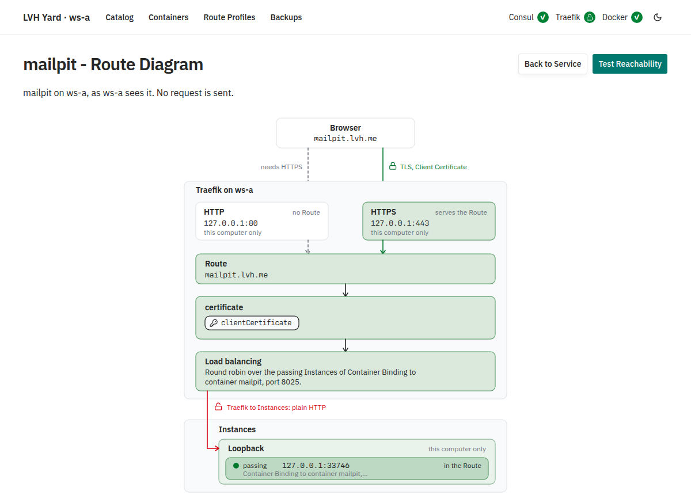
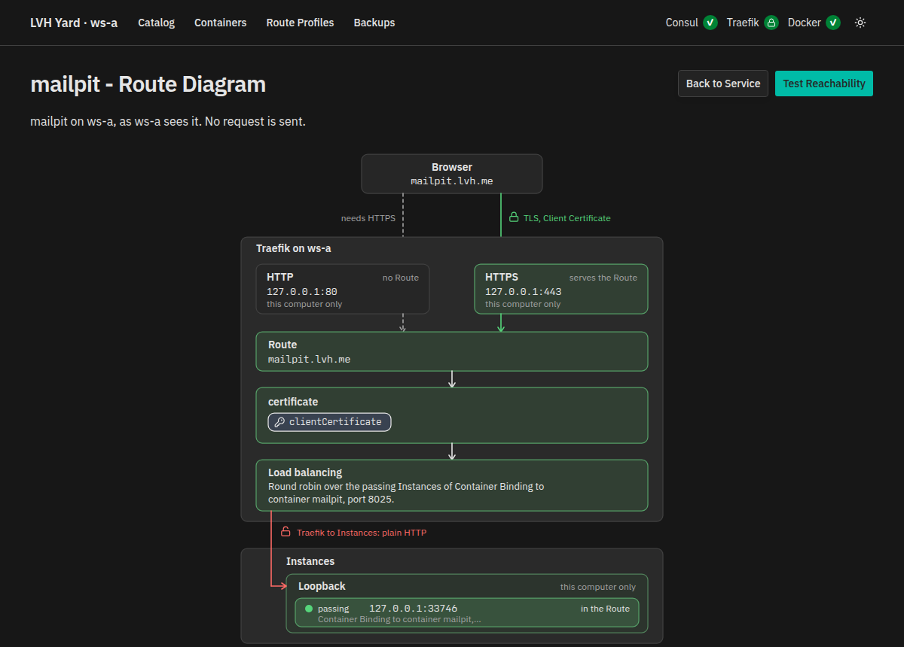
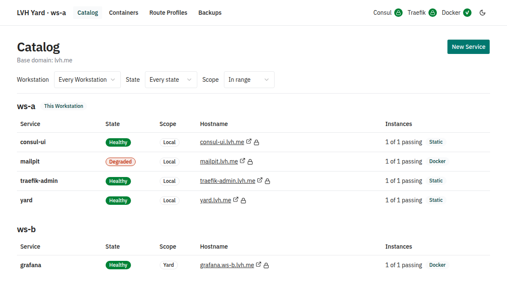
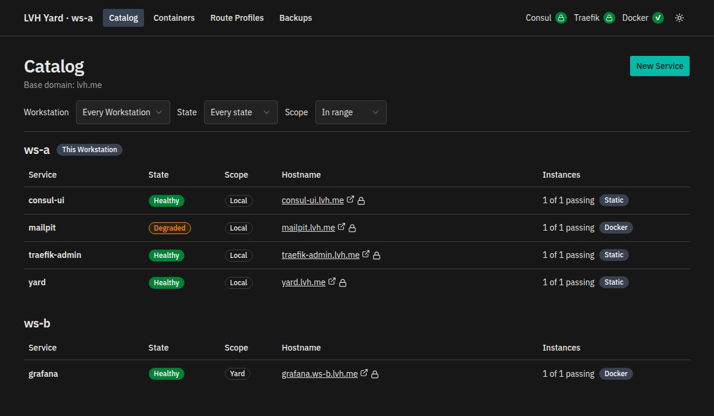
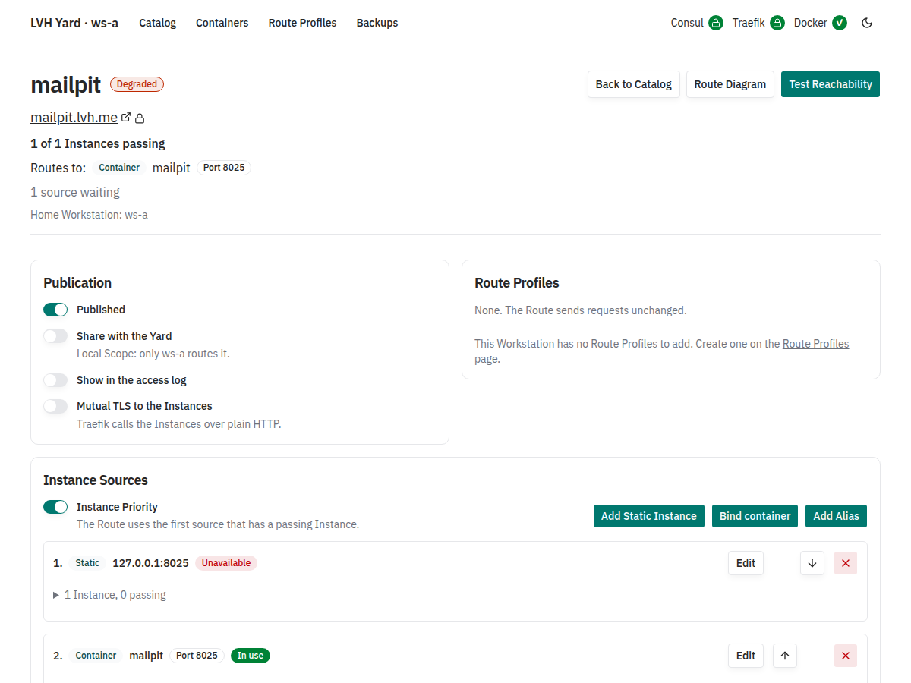
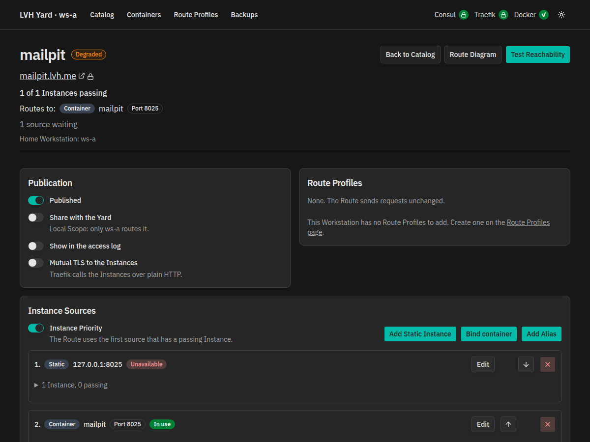

Local virtual host, for your computer, HomeLab or LAN
Reach any dev, local or docker service on your computer, HomeLab or LAN by name, not by IP and port.
LVH (Local Virtual Host) Yard gives every service a hostname, such as
http://mailpit.lvh.me, and you
write no port. The service can be a local process, a Docker container,
a Compose project or a program on another computer. LVH Yard
integrates Consul, Traefik and Docker for you.


The Route Diagram shows how a request reaches a Service: the listeners of Traefik, the Route Profiles, and the Instances, with the protocol of each step.
How it works
A wildcard domain points every hostname below it to the same
address. For lvh.me, that address is
127.0.0.1, your own computer. Traefik reads the
hostname and sends the request to the right service.
-
1. Install
Run the install script, on Linux, macOS or Windows 11. Then
lvh-yardwrites the setup files and Docker starts Consul, the dashboard and Traefik. -
2. Publish
Create a Service. Add its Instances: a fixed address, or a Docker container that LVH Yard follows. Publish it.
-
3. Open
whoami.lvh.meworks in your browser. Share it with the Yard, and every computer can open it. -
4. Explore
On its first start, LVH Yard publishes three Services for you. They use your Base Domain, here
lvh.me.- yard.lvh.me: Dashboard
- consul-ui.lvh.me: Consul UI
- traefik-admin.lvh.me: Traefik Admin
# Install Docker first, or Docker Desktop on Windows, and keep it running.
# Install LVH Yard on Linux or macOS.
$ curl -fsSL https://lvhy.cc/install.sh | sh
# Install LVH Yard on Windows 11, in PowerShell.
PS> irm https://lvhy.cc/install.ps1 | iex# From here, every command is the same on Linux, macOS and Windows.
# Create a Workstation and answer its two questions.
$ lvh-yard ws init
Workstation name (lowercase letters, digits and -) [laptop]: ws-a
Base Domain: lvh.me
$ lvh-yard ws compose start
$ lvh-yard status
LVH Yard on this Workstation: ok
# Run a container and give it a name. Docker picks the port.
$ docker run -d --name whoami -p 80 traefik/whoami
$ lvh-yard service create whoami
$ lvh-yard register container whoami --port 80
$ lvh-yard publish whoami
Published whoami at whoami.lvh.me.
# Open it by name. On Windows, run curl.exe.
$ curl http://whoami.lvh.me
Hostname: 82ec38bd098dProblems it solves
Each card gives the problem, one command and the page that shows how.
-
I forget which port each service uses.
A Service has a name. Its hostname replaces the port.
lvh-yard publish mailpit -
Docker gives my container a new port after every
compose up.Bind the Compose service once. The hostname stays the same.
lvh-yard register compose demo/mailpit --port 8025 -
I edit
/etc/hostson each computer, and I do it again for the next one.A wildcard domain gives every name below it the same address. You edit no file.
lvh-yard ws init --base-domain lvh.me -
localhost:3000breaks my cookies and my OAuth callbacks.Give the app its own hostname. Its cookies stay with that host.
lvh-yard publish mailpit -
I need HTTPS in development, and I do not want to click through warnings.
Sign the certificate with your Workstation CA. Trust that CA once.
lvh-yard ws tls https create -
My teammate cannot open my service.
Publish it with Yard Scope. Every Workstation of the Yard gets a hostname.
lvh-yard publish mailpit --scope yard
One Yard, many computers
Every Workstation in your HomeLab joins the same Yard with one shared
key. Each one learns the Services of the others. A Service that you
publish with Yard Scope gets a hostname on every Workstation:
grafana.ws-b.lvh.me opens the Grafana that runs on
ws-b.


What it does
-
A name for each Service
Publish a Service on one Workstation, or share it with the whole Yard.
-
Routes that check health
A Service can have many Instances. The Route uses only the ones that pass, so you can test replicas as in production.
-
Docker containers follow their Service
Bind a container or a Compose service to a name. The port that Docker gives it does not matter.
-
Route Profiles
Add Traefik middlewares to a Route: basic auth, IP allow lists, headers, CORS.
-
A dashboard and a CLI
Both show the state, the Instances, the warnings and the reachability tests of every Service.
-
Backups
Export the setup of a Workstation to one YAML file. Import it on the same Workstation or on another one.
Your process first, the container as fallback
You develop an app that you usually run as a Docker container. Run your modified copy as a process, and give it the first place in the order of the Instance Sources. The Route uses the first source that has a passing Instance. While your copy runs, it gets the requests. When you stop it, the container answers again. Put your process before the container
See every Instance behind a name
The Service page shows the state of a Service, its Publication, and the order of its Instance Sources. Here, the first source, a Static Instance on port 8025, does not answer, so the Service has the state degraded. The Route uses the second source, the Mailpit container.


Pick your Base Domain
A wildcard domain answers the same address for every name below it.
For lvh.me, that address is 127.0.0.1, so
mailpit.lvh.me reaches your own computer, and Traefik
routes the request. A domain that you own can answer any address,
such as the LAN address of a Workstation. Two shared domains work
for a trial: lvh.me, which belongs to a third party,
and l.lvhy.cc, the domain of this project. For daily
work, use a domain that you own.
Read how to pick a Base Domain.
Typical questions
-
Why not edit
/etc/hosts? - Each computer needs its own edit, and each new name needs another one. A wildcard domain answers the same address for every name, so you edit no file. Pick your Base Domain
-
Why not just use
localhost:3000? -
A cookie ignores the port, so apps on
localhostshare their cookies. A hostname for each service keeps them apart. Fix cookies and OAuth callbacks Is it magic? How does it reach my computer?
-
No. The wildcard DNS of
lvh.meanswers127.0.0.1for every name below it. Somailpit.lvh.mepoints to your own computer, and Traefik sends the request to the Instance. What LVH Yard solves Does LVH Yard start or stop my processes?
- No. It manages Services, and it never starts or stops the processes or containers behind them.
-
Will
lvh.mestop working one day? - It can, because its owner controls the DNS. Use a domain that you own for daily work. Pick your Base Domain
Does it work offline?
-
Yes. Use
dev.localhost, or a wildcard domain in your own DNS resolver. Pick your Base Domain Is it safe on my LAN?
- It is for a network that you trust, and the dashboard has no login. Read the limits.
Does it work on macOS and Windows?
- Yes, with the limits that What you need lists.
What you need
- Docker with Compose on every Workstation.
-
lvh-yardfor Linux (amd64, arm64), macOS (arm64) or Windows 11 (x64). It needs no Java. - On Windows 11: Docker Desktop with the WSL2 backend and host networking. The Windows Workstation supports IPv4 only, and the executable is not signed.
- Docker is the only container runtime that LVH Yard supports.
Use it on a network that you trust
LVH Yard is a development tool. Anyone who reaches the dashboard
can change the Services of that Workstation and reach its
containers through the Docker socket. By default it listens on
127.0.0.1 only.
Read the security policy.
The dashboard has no login. You can add one.
Publish the yard Service with a Route Profile that
has basic auth. Keep the dashboard on 127.0.0.1. Let
only Traefik listen on the address that others reach, and serve it
over HTTPS.
Use a domain that you own and that points to that address:
lvh.me and l.lvhy.cc point to
127.0.0.1. Anything that runs on the Workstation
still reaches the dashboard without a password. The maintainer has
not tested a public server.
Give your services a name
LVH Yard is open source, under the Apache License 2.0.